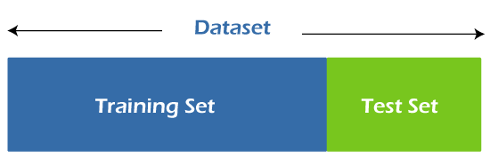

k-Nearest-Neighbors Algorithmus
Nelson Fritz
Ziele dieses Vortrags
Einstieg in K.I. bzw. Machine Learning
Einstieg in das sehr aktuelle Thema Künstliche Intelligenz bzw. dem maschinellen lernens engl. Machine
Learning,
weil:
Publikum sind angehende ITler => Grundlagen in K.I. werden in Karriere helfen
Thema K.I. im Bildungsplan
Einstieg in K.I. bzw. Machine Learning
Erklärung des k-Nearest-Neighbors (k-NN) Algorithmus
Erklärung des k-Nearest-Neighbors kurz k-NN Algorithmus, aufgrund der:
Einfachheit => perfekter Einstieg in maschinelles Lernens
k-NN im Abitur
Einstieg in K.I. bzw. Machine Learning
Erklärung des k-Nearest-Neighbors (k-NN) Algorithmus
Vorstellung eines Anwendungsbeispiels: Brustkrebs Diagnose mit k-NN
Vorstellung eines Anwendungsbeispiels und zwar eine eigenentwickelte Brustkrebs Diagnose mit k-NN, weil
Möglichkeiten des k-NN veranschaulichen
Interesse wecken
Inhalt dieses Vortrags
Grundlagen des maschinellen Lernens
Grundlagen des maschinellen Lernens
Einführung in den k-Nearest-Neighbors Algorithmus
Grundlagen des maschinellen Lernens
Einführung in den k-Nearest-Neighbors Algorithmus
Distanzmetriken
Grundlagen des maschinellen Lernens
Einführung in den k-Nearest-Neighbors Algorithmus
Distanzmetriken
Bestimmung der Genauigkeit
Grundlagen des maschinellen Lernens
Einführung in den k-Nearest-Neighbors Algorithmus
Distanzmetriken
Bestimmung der Genauigkeit
Bestimmung des Parameters k
Grundlagen des maschinellen Lernens
Einführung in den k-Nearest-Neighbors Algorithmus
Distanzmetriken
Bestimmung der Genauigkeit
Bestimmung des Parameters k
Vorstellung eines Anwendungsbeispiels: Brustkrebs Diagnose
Grundlagen des maschinellen Lernens
Einführung in den k-Nearest-Neighbors Algorithmus
Distanzmetriken
Bestimmung der Genauigkeit
Bestimmung des Parameters k
Vorstellung eines Anwendungsbeispiels: Brustkrebs Diagnose
Vor- und Nachteile des Algorithmus
Grundlagen des maschinellen Lernens
Einführung in den k-Nearest-Neighbors Algorithmus
Distanzmetriken
Bestimmung der Genauigkeit
Bestimmung des Parameters k
Vorstellung eines Anwendungsbeispiels: Brustkrebs Diagnose
Vor- und Nachteile des Algorithmus
Fazit
Grundlagen des maschinellen Lernens
Maschinelles Lernen ist ein Bereich der künstlichen Intelligenz, der es Systemen ermöglicht, aus
Daten automatisch zu lernen, um in ihnen Muster und Zusammenhänge zu erkennen, ohne explizite
Programmierung
Die identifizierten Muster und Zusammenhänge können auf neuen Datensätzen
angewendet werden, um Vorhersagen zu treffen
Überwachtes Lernen (supervised learning)
Unüberwachtes Lernen (unsupervised learning)
Dabei lässt sich maschinelles Lernen in zwei Arten unterteilen: Überwachtes und unüberwachtes Lernen
Überwachtes Lernen (supervised learning)
Vorhersage über neue Daten basierend auf vorhandenen Daten mit Labels
Unüberwachtes Lernen (unsupervised learning)
Hierbei können Vorhersagen über neue, bisher unbekannte Daten getroffen
werden, basierend auf vorhandenen Daten, die mit den dazugehörigen Ergebnisse (Labels) versehen sind
Klassifikations- und Regressionsalgorithmen sind Beispiele für Überwachtes Lernen,
wobei Klassifikation die Zuordnung von einem Element zu einer bestimmten Klasse und Regression die
Vorhersage von stetigen Werten ist
Überwachtes Lernen (supervised learning)
Vorhersage über neue Daten basierend auf vorhandenen Daten mit Labels
Beispiele: Klassifikation und Regression
Unüberwachtes Lernen (unsupervised learning)
Hierbei können Vorhersagen über neue, bisher unbekannte Daten getroffen
werden, basierend auf vorhandenen Daten, die mit den dazugehörigen Ergebnisse (Labels) versehen sind
Klassifikations- und Regressionsalgorithmen sind Beispiele für Überwachtes Lernen,
wobei Klassifikation die Zuordnung von einem Element zu einer bestimmten Klasse und Regression die
Vorhersage von stetigen Werten ist
Überwachtes Lernen (supervised learning)
Vorhersage über neue Daten basierend auf vorhandenen Daten mit Labels
Beispiele: Klassifikation und Regression
Unüberwachtes Lernen (unsupervised learning)
Vorhersage der Labels von Daten nur mit Features
Im Unterschied zum überwachten Lernen liegen nur die Eigenschaften der Daten
(Features), aber nicht die dazugehörigen Ergebnisse (Labels) vor. Also bei unüberwachtem Lernen
versuchen Algorithmen, diese Ergebnisse (Labels) selbstständig zu generieren
Überwachtes Lernen (supervised learning)
Vorhersage über neue Daten basierend auf vorhandenen Daten mit Labels
Beispiele: Klassifikation und Regression
Unüberwachtes Lernen (unsupervised learning)
Vorhersage der Labels von Daten nur mit Features
Beispiel: Clustering
Im Unterschied zum überwachten Lernen liegen nur die Eigenschaften der Daten
(Features), aber nicht die dazugehörigen Ergebnisse (Labels) vor. Also bei unüberwachtem Lernen
versuchen Algorithmen, diese Ergebnisse (Labels) selbstständig zu generieren
Clustering fasst ähnliche Daten in die gleiche Gruppen
Zusätzlich kann maschinelles Lernen nach der Parametrisierung der Modelle unterschieden werden.
Parametrisch
Voraussetzung von zugrundeliegende statistische Verteilungen in Daten
Parametrisch
bedeutet, dass zugrundeliegende statistische Verteilungen in den Daten vorausgesetzt werden, wie
beispielsweise eine Normalverteilung
Nichtparametrisch bedeutet, dass keine zugrundeliegenden
statistischen Verteilungen in den Daten vorausgesetzt werde
Parametrisch
Voraussetzung von zugrundeliegende statistische Verteilungen in Daten
Nichtparametrisch
Keine Voraussetzung von zugrundeliegende statistische Verteilungen in Daten
Parametrisch
bedeutet, dass zugrundeliegende statistische Verteilungen in den Daten vorausgesetzt werden, wie
beispielsweise eine Normalverteilung
Nichtparametrisch bedeutet, dass keine zugrundeliegenden
statistischen Verteilungen in den Daten vorausgesetzt werde
Einführung in den k-Nearest-Neighbors Algorithmus
Definition
Der $k$-Nearest-Neighbors-Algorithmus, auch als $k$-NN bezeichnet, ist ein nichtparametrischer, überwachter
Klassifikator, der das Konzept der Nähe nutzt, um Vorhersagen über die Klasse eines einzelnen Datenpunktes zu
treffen.
Abfrage des Verständnis des Publikums
Intuitive Erklärung des k-NN
Abfrage der Gruppe vom Publikum und wieso?
Intuitive Erklärung des k-NN
k-NN basiert auf der Idee, dass naheliegende Datenpunkte dazu tendieren, zur gleichen Klasse zu
gehören
bei der Klassifikation eines unklassifizierten Datenpunktes berechnet k-NN die Distanz zu allen
klassifizierten
Datenpunkten im Datensatz mithilfe einer Distanzmetrik
Der unklassifizierte Datenpunkt wird dann nach der am häufigsten vorkommenden Klasse der $k$ am
nächsten liegenden klassifizierten Datenpunkte klassifiziert
Zusammenfassung des Algorithmus
Schritt: Wähle die Anzahl k der nächsten Nachbarn aus.Schritt: Berechne die Distanz vom nicht klassifizierten Punkt zu allen klassifizierten
Punkten.Schritt: Nimm die k nächsten Nachbarn gemäß der berechneten Distanz.Schritt: Zähle unter diesen k Nachbarn die Anzahl der Punkte, die zu jeder
Klasse gehören.Schritt: Ordne den neuen Punkt der Klasse zu, die unter diesen k Nachbarn am
häufigsten vertreten ist.
Distanzmetriken
Die Distanzmetrik berechnet die Distanz zwischen zwei Datenpunkte
Um den Algorithmus auf einem bestimmten Datensatz optimal zu nutzen, müssen wir eine geeignete
Distanzmetrik entsprechend auswählen
Es gibt viele verschiedene Distanzmetriken zur Verfügung, aber im
Folgenden werden nur die drei gängigsten vorgestellt
Summenzeichen
$$\sum_{i=1}^{n} i$$
Sigma = Summe
i = Laufvariable
n = Endwert
Funktion die von der Laufvariable abhängt
$$\sum_{i=1}^{3} i=1+2+3=6$$
$$\sum_{i=1}^{3} i=1+2+3=6$$
int summe = 0;
for (int i = 1; i <= 3; i++) {
summe = summe + i;
}
$$\mathbf{q}=(q_0, q_1, q_2)=(3,3,3)$$
$$\sum_{i=0}^{2} q_i=q_0+q_1+q_2=3+3+3=9$$
$$\mathbf{q}=(q_0, q_1, q_2)=(3,3,3)$$
$$\sum_{i=0}^{2} q_i=q_0+q_1+q_2=3+3+3=9$$
int[] q = {3, 3, 3};
int summe = 0;
for (int i = 0; i <= 2; i++) {
summe = summe + q[i];
}
Euklidische Distanz
Die wohl einfachte Distanzmetrik ist die euklidische Distanz
Verallgemeinerung des Satz des Pythagoras
Es ist die kürzeste Strecke zwischen zwei Punkten
$$\text{dist}(q, x_i) = \sqrt{ \sum_{j=1}^{n} (q_j - x_{ij})^2 }$$
q ist ein neuer Datenpunkt
x_i ist ein Trainingsdatenpunkt
n ist die Anzahl an Merkmalen
$$\mathbf{q}=(q_1, q_2)=(1,1) \quad x_i=(x_{i_1}, x_{i_2})=(2,3)$$
$$\text{dist}(q, x_i) =\sqrt{ \sum_{j=1}^{2} (q_j - x_{ij})^2 }$$
$$= \sqrt{ (q_1 - x_{i_1})^2 + (q_2 - x_{i_2})^2 }$$
$$ = \sqrt{ (1 - 2)^2 + (1 - 3)^2 }=\sqrt{5}$$
q ist ein neuer Datenpunkt
x_i ist ein Trainingsdatenpunkt
n ist die Anzahl an Merkmalen
Manhattan Distanz
Manhattan Distanz misst absoluten Abstand zwischen zwei Punkten
Diese Metrik ist auch als ”Taxidistanz” oder ”Stadtblock-Distanz” bekannt,
da sie typischerweise durch ein Raster dargestellt wird, das zeigt, wie man sich durch die Straßen
einer Stadt von einer Adresse zur anderen bewegen kan
$$
\text{dist}(q, x_i) = \sum_{j=1}^{n} |q_j - x_{ij}|
$$
$$\mathbf{q}=(q_1, q_2)=(1,1) \quad x_i=(x_{i_1}, x_{i_2})=(2,3)$$
$$\text{dist}(q, x_i) = \sum_{j=1}^{2} |q_j - x_{ij}|$$
$$= |q_1 - x_{i_1}| + |q_2 - x_{i_2}| $$
$$ = |1 - 2| + |1 - 3|=|-1|+|-2|=3$$
q ist ein neuer Datenpunkt
x_i ist ein Trainingsdatenpunkt
n ist die Anzahl an Merkmalen
Minkowski Distanz
$$
\text{dist}(q, x_i) = \Biggl( \sum_{j=1}^{n} |q_j - x_{ij}|^p \Biggr)^{\frac{1}{p}}
$$
verallgemeinerte Form der euklidischen und Manhattan-Distanzmetriken
Der Parameter $p$ ermöglicht die Variation und Entwicklung weiterer Abstandsmetriken
Der euklidische
Abstand wird durch diese Minkowski Distanz repräsentiert, wenn der Wert von $p=2$ ist. Entsprechend wird
der Manhattan-Abstand durch den Wert von $p=1$ dargestellt
Bestimmung der Genauigkeit

Der Datensatz wird in zwei Teile geteilt: 1. Trainingsdatensatz und 2. Testdatensatz
Neue Datenpunkte mithilfe des Trainingsdatensatz klassifiziert
Die Klassenlabels werden vom Testdatensatz entfernt und werden somit zu neuen Datenpunkt, die
überprüft werden können
Um die Genauigkeit des k-NN-Algorithmus auf einem Testdatensatz zu bestimmen, wird eine
Genauigkeitsfunktion benötigt
Bestimmung der Genauigkeit
$$
\text{accuracy}(y, \hat{y})=\frac{1}{n} \sum_{i=1}^{n} 1 \cdot (\hat{y}_i = y_i)
$$
$y$ sind die wahren Klassenlabels
$\hat{y}$ sind die vorhergesagten Klassenlabels
Angenommen, wir haben die wahren Klassenlabels $y$ und die vorhergesagten Klassenlabels $\hat{y}$.
Die Genauigkeitsfunktion zählt, wie viele Vorhersagen des Modells korrekt sind, indem sie die wahren
und vorhergesagten Klassenlabels vergleicht
Wenn die Vorhersage $\hat{y}_i$ mit dem tatsächlichen Wert $y_i$ übereinstimmt, wird der Ausdruck den
Wert 1 haben, andernfalls wird er den Wert 0 haben
Diese Werte werden nun summiert und durch die Anzahl der Klassenlabels geteilt, wodurch wir die
Genauigkeit erhalten
$$y=(1,0) \quad \hat{y}=(0,0)$$
$$
\text{accuracy}(y, \hat{y})=\frac{1}{2} \sum_{i=1}^{2} 1 \cdot (\hat{y}_i = y_i)
$$
$$=\frac{1}{2} \Bigl( 1 \cdot (\hat{y}_1 = y_1) + 1 \cdot (\hat{y}_2 = y_2) \Bigr)$$
$$=\frac{1}{2} \Bigl( 1 \cdot 0 + 1 \cdot 1 \Bigr)=50\%$$
Angenommen, wir haben die wahren Klassenlabels $y$ und die vorhergesagten Klassenlabels $\hat{y}$.
Die Genauigkeitsfunktion zählt, wie viele Vorhersagen des Modells korrekt sind, indem sie die wahren
und vorhergesagten Klassenlabels vergleicht
Wenn die Vorhersage $\hat{y}_i$ mit dem tatsächlichen Wert $y_i$ übereinstimmt, wird der Ausdruck den
Wert 1 haben, andernfalls wird er den Wert 0 haben
Diese Werte werden nun summiert und durch die Anzahl der Klassenlabels geteilt, wodurch wir die
Genauigkeit erhalten
Bestimmung des Paramters k
Der Parameter k in k-NN dient dazu, die Anzahl der nächsten
Nachbarn festzulegen, die zur Bestimmung der Klasse eines gegebenen Abfragepunkts
herangezogen werden
Wenn beispielsweise k = 1 ist, erfolgt die Zuordnung des Abfragepunkts zur Klasse seines einzigen
nächsten Nachbarn
Wenn beispielsweise k = 5 ist, erfolgt die Zuordnung des Abfragepunkts zu einer Klasse durch die am
häufigsten
vorkommenden Klasse der 5 nächsten Nachbarn
Über- und Unteranpassung
Die Auswahl von k stellt eine Herausforderung dar, da unterschiedliche Werte zu Überanpassung
(Overfitting) oder Unteranpassung (Underfitting) führen können
Ein zu niedriger Wert für k führt zu Überanpassung (Overfitting), indem er zu sehr auf lokales
Rauschen reagiert
Ein zu hoher Wert für k zu Unteranpassung (Underfitting) führen kann, indem er zu stark vereinfacht
Daten mit erhöhtem Ausreißerpotential oder Rauschen neigen dazu, von höheren Werten von k zu
profitieren
Die Auswahl eines geeigneten k-Wert erfordert somit eine gründliche Analyse der Datensätze und das
Ausprobieren von verschiedenen Werten für k
Es wird außerdem generell empfohlen, eine ungerade Zahl für k zu wählen, um "Unentschieden" bei der
Klassifizierung zu vermeiden und eine eindeutige Zuordnung zu ermöglichen
Anwendungsbeispiel: Brustkrebs Diagnose mit k-NN
https://colab.research.google.com/drive/1YXzSxf5vOF6sLWyw0UL49zBILEORUTi-
Vor- und Nachteile von k-NN
Einfache Anwendung: k-NN ist leicht zu erlernen, aber dennoch präzise, was ihn zu einem idealen
Einstieg für Schüler mit Interesse für Informatik, Mathematik und Datenwissenschaft macht.
Vorteile
Einfache Anwendung
Einfache Anpassung
Einfache Anpassung: Der Algorithmus passt sich problemlos an neue Daten an, da dieser
keine Trainingsphase besitzt. Jedoch sollte, wie in Kapitel 5 beschrieben, der Parameter k je
nach Datensatz angepasst werden.
Vorteile
Einfache Anwendung
Einfache Anpassung
Wenige Parameter
Wenige Parameter: Mit nur einem Parameter k und einer Distanzmetrik minimiert k-NN
den Aufwand für Parameter im Vergleich zu komplexeren maschinellen Lernalgorithmen
Vorteile
Einfache Anwendung
Einfache Anpassung
Wenige Parameter
Skalierungsprobleme: Da dieser Algorithmus den ganzen Trainingsdatensatz bei jeder Klas-
sifizierung benötigt, wird bei großen Datensätzen viel Arbeitspeicher und Speicherplatz ver-
wendet, was die Kosten in die Höhe treibt
Vorteile
Einfache Anwendung
Einfache Anpassung
Wenige Parameter
Nachteile
Skalierungsprobleme
Fluch der Dimensionalität
Fluch der Dimensionalität: Der k-NN-Algorithmus scheint dem „Fluch der Dimension-
alität“ zu unterliegen. Dies liegt daran, dass die Datenpunkte in einem hochdimensionalen
Raum tendenziell weiter voneinander entfernt sind und es daher schwieriger wird, sinnvolle
Entfernungen oder Ähnlichkeiten zwischen den Punkten zu definieren. Dies äußert sich in
einer eingeschränkten Leistungsfähigkeit, wenn mit hochdimensionalen Daten als Eingabe
gearbeitet wird.
Vorteile
Einfache Anwendung
Einfache Anpassung
Wenige Parameter
Nachteile
Skalierungsprobleme
Fluch der Dimensionalität
Über- und Unteranpassung
Überanpassung und Unteranpassung: Zu niedrige bzw. zu hohe Werte für den Parameter
k können zur Überanpassung bzw. Unteranpassung führen, was die Genauigkeit des Modells
einschränkt
Vorteile
Einfache Anwendung
Einfache Anpassung
Wenige Parameter
Nachteile
Skalierungsprobleme
Fluch der Dimensionalität
Über- und Unteranpassung
Unterlegenheit
Unterlegenheit: In manchen Situationen ist der k-NN Algorithmus anderen maschinellen
Lernalgorithmen unterlegen, wie bspw. neuronalen Netzwerken.
Fazit
k-NN stellt eine simple, aber dennoch effektive Methode zur Klassifizierung dar
Stärken liegen in seiner intuitiven Natur sowie seiner einfachen Anwendung und Anpassung
Jedoch sollte die Wahl für den Parameter k und die Distanzmetrik mit Bedacht getroffen werden
Alles in allem kann man behaupten, dass der k-Nearest-Neighbors Algorithmus eine gute Wahl für
Klassifikationsprobleme ist, was durch das Anwendungsbeispiel erfolgreich veranschaulicht wurde
Ende
Vielen Dank für Ihre Aufmerksamkeit
Quellen
https://www.datarevenue.com/en-blog/what-is-machine-learning-a-visual-explanation
https://www.geeksforgeeks.org/underfitting-and-overfitting-in-machine-learning/